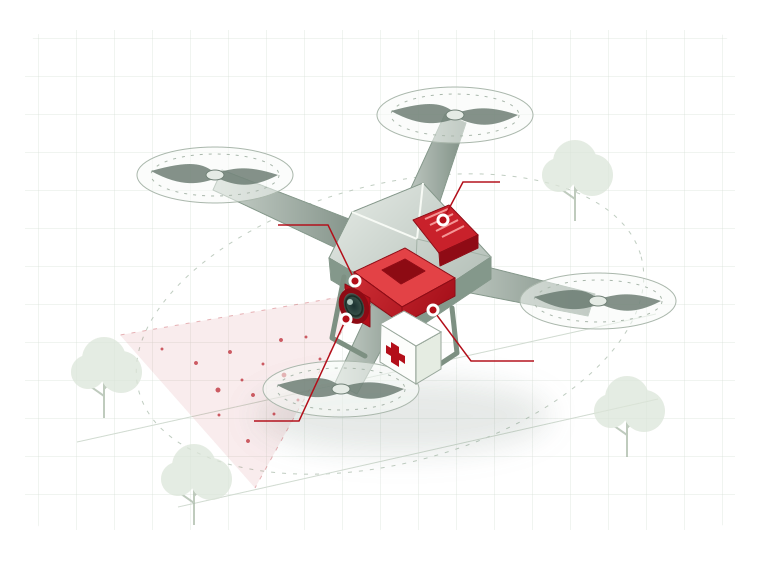

THE INTELLIGENCE IS IN THE PAYLOADEVENT / SNN / VLM

Event visionGenX320
Compute on demandGPU + VLM
Always watchingSNN
The drone is the carrier. SpikeNav is the navigation payload.
≈76%
less navigation power
+3–7%
modelled range on 1–2 kg drones
10%
assumed GPU active time
Poster model. Flight validation comes next.
THE REASON TO GO FURTHER
Remote should not mean out of reach.
Snakebite is a time-critical emergency. In the Amazon, a stocked clinic can be hours away by river. Our question: can lower-power navigation leave more energy for the journey?
9 h 15 minmedian bite-to-antivenom time in a separate study of 119 patients in French Guiana. Geography and care pathways differ.Houcke et al., 2023
A FLIGHT, FOUR SITUATIONS
Watch. Avoid. Wake when needed.
The autopilot flies the route. The SNN watches for obstacles and can take over locally. Explore where each model fits.
THE MISSION, IN MOTION
Follow the signals from departure to delivery.
Ready to departScripted timing · separate from the energy model
CONTROL CONCEPT · ILLUSTRATIONGPU asleep
MOTION COMMANDSWaypoint autopilot
SPARSE MODE
Quiet compute. Eyes open.
The autopilot follows waypoints. The event camera and SNN watch for looming obstacles; the GPU and frame cameras are off.
SNNEvent perception + avoidanceWatching
GPUFallback computationOff
VLMDestination planningOff
Obstacle detected? The SNN takes over; the flight controller keeps stabilising the aircraft.
Proposed control logic, not a live drone or trained-model output. The flight controller stays active in every mode. Detection, wake-up time and safe handovers still need validation.
SIX COMPONENTS. ONE PROPOSED SYSTEM.
The payload is the product.
Real hardware candidates, with real specifications. Select a component to see its role, power budget and manufacturer sources.
PROPHESEEALWAYS ON
GenX320
A camera that notices change.
Instead of sending complete frames, this sensor reports local brightness changes as events with a pixel position, time and polarity. Sparse input is a natural fit for an SNN.
Resolution
320 × 320
Pixel latency
<150 µs*
Low-rate CPI
3 mW*
MIPI streaming
22.8 mW*
*2023 engineering-sample brief: 3 mW at 100k events/s (CPI); 22.8 mW at 10M events/s (MIPI). Latency at 1,000 lux. These are operating points, not a whole-module power guarantee; current specifications differ by mode.
A neuromorphic research processor with programmable neuron models and on-chip learning. Our proposed policy would turn camera events into avoidance commands and learn selected synaptic weights.
Neuron cores
128
Up to neurons
1 M
Up to synapses
120 M
Model budget
1 W*
*1 W is the poster's assumed SNN budget, not a guaranteed Loihi 2 specification. Access is through Intel's research ecosystem; this is not a normal retail component. Event-camera integration and flight performance remain untested.
A small, single-point time-of-flight rangefinder. It provides a distance signal alongside event vision, for the proposed obstacle threshold and planned descent.
Range at 90% reflectivity
0.1–12 m
Configurable rate
1–1,000 Hz
Power per sensor
≤0.7 W
Sensor mass
5 ±0.3 g
2° field of view; range falls to 7 m at 10% reflectivity. Engineering implication: separate, simultaneous forward and downward measurements need two fixed units (up to 1.4 W). The poster budgets one; the calculator lets you choose two.
The candidate GPU computer for a vision-language model near the destination and for safety fallback. The VLM would plan the delivery approach from RGB and thermal images; the SNN would retain collision-avoidance priority.
Selected variant
8 GB
Original power modes
7 / 15 W
Super mode option
25 W
Assumed active average
10 W*
*10 W is a modelling choice between the original modes, not a measured workload. JetPack 6.2 adds Super configurations, including 25 W. Module budgets exclude carrier overhead. Complete power-off in cruise and boot within the active window are unvalidated assumptions.
A wide-angle colour camera module based on Sony's STARVIS 2 sensor. It supplies conventional image frames for destination understanding, alongside the thermal module.
Active pixels
3,856 × 2,176
Up to frame rate
60 fps
Horizontal field of view
118°
Approximate power
0.6 W
4-lane MIPI CSI-2, 10/12-bit RAW, approximately 17 g. No image signal processor is included. Specifications refer to this exact non-HL module; the 0.6 W budget excludes the rest of the imaging pipeline.
A radiometric long-wave infrared module. Thermal contrast could complement colour frames when planning an approach, but person detection still requires a validated perception model.
Resolution
160 × 120
Horizontal field of view
57°
Frame rate
8.6 Hz
Operating power
150 mW*
*Manufacturer values: 150 mW operating, 5 mW standby and 650 mW during shutter events; mass 0.9 g without socket. The poster uses 0.15 W plus 0.6 W RGB = 0.75 W. Shutter peaks, interfaces and boot overhead are not included.
*Mode-specific specification or stated project assumption. These parts have not been validated together as a flight-ready system. Six physical components cover the poster's five functional groups: RGB and thermal are separate modules.
FOLLOW THE WATTS
Big compute savings. A smaller range gain.
Propulsion uses most of the battery. Change the assumptions to see why cutting navigation power by about 76% gives about 6.5% more range on a 1 kg drone.
Range gain = (baseline total power / SpikeNav total power − 1) × 100. Camera input is converted from mW to W.
Flight estimates
Usable energy = battery × (1 − reserve / 100). Flight time = usable energy / total power × 60. Return-trip radius = speed × flight time / 120.
Constant speed and propulsion; same payload and usable battery in both cases. The model excludes extra avionics, wind, delivery hover, regulator losses and separate boot or shutter peaks. The active share must cover boot and any GPU fallback.
Where does 130 W/kg come from?
DJI Mavic 3 Classic: 77 Wh, 40 min maximum hover, 895 g. Dividing these gives ≈129 W/kg. The poster rounds to 130 and scales to 1, 2 and 5 kg. This is a rough electrical-power proxy, not a measured propulsion law or a selected delivery drone.
Train in simulated forests first. Then explore small, reward-modulated updates on chip. In-flight adaptation is a proposal; it has not been demonstrated here.
OFFLINE · BEFORE FLIGHT
Learn across thousands of virtual flights.
Simulate camera events, score avoidance and crashes, and train the network with surrogate-gradient backpropagation on a GPU.
Pre/post spike timing leaves a fading eligibility trace. A reward signal modulates selected weight updates. Clip the weights; never learn the fixed safety threshold.
Reinforce a useful take-over connection.Δw = +0.080
Example only: η = 0.1, e = 0.8. “Miss” weakens a stay-in-autopilot connection. These are different synapses; buttons do not train a network. Correction gain could be adjusted separately from clearance feedback.
What still needs proving
Safe take-over thresholds, event-to-command latency, GPU boot time, robust VLM planning and adaptation without forgetting. No flight results or clinical benefit are claimed.
27020 BIOENGINEERING · NEURO · GROUP 2
A longer reach starts with a smaller signal.
SpikeNav explores event-based intelligence for urgent medical deliveries. Next: validate in simulation, integrate the hardware, then evaluate a field prototype.
Based on the supplied November 2026 poster. Product facts link to manufacturer documentation. Model assumptions are identified beside the relevant values.